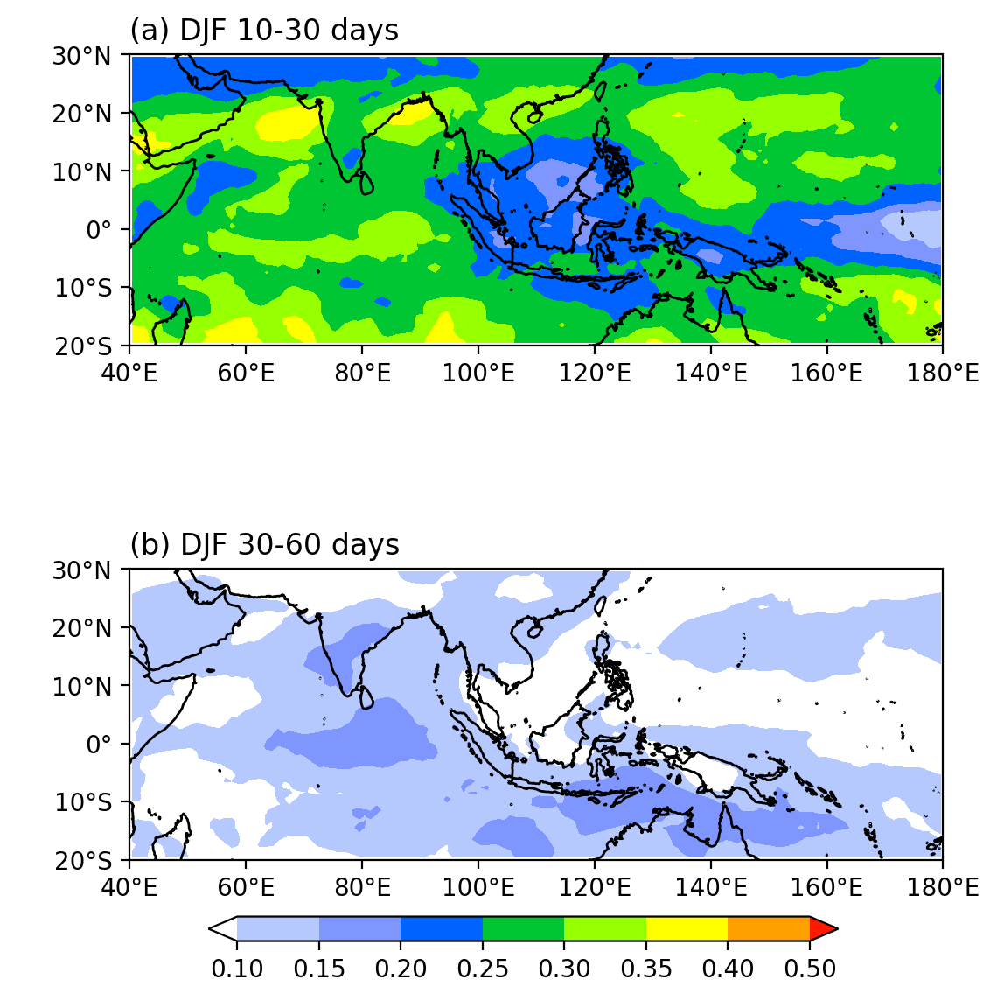

Lanczos 時間序列帶通濾波 (Bandpass Filter)
Lanczos 時間序列帶通濾波 (Bandpass Filter)¶
此程式碼根據 https://github.com/liv0505/Lanczos-Filter 以及NCL的bandpass filter、filwgts_lanczos進行修改。
首先建立自訂義函式：
"""
Applying a bandpass filter
(the difference of two lowpass lanczos filters)
to a time-series.
References
----------
Duchon C. E. (1979) Lanczos Filtering in One and Two Dimensions.
Journal of Applied Meteorology, Vol 18, pp 1016-1022.
"""
def low_pass_weights(nwts, cutoff):
import numpy as np
"""Calculate weights for a low pass Lanczos filter.
Args:
nwts: int (Source: NCL)
A scalar indicating the total number of weights (must be an odd number; nwt >= 3).
The more weights, the better the filter, but there is a greater loss of data.
cutoff: float
The cutoff frequency in inverse time steps.
"""
w = np.zeros([nwts])
n = nwts // 2
w[n] = 2 * cutoff
k = np.arange(1., n)
sigma = np.sin(np.pi * k / n) * n / (np.pi * k)
firstfactor = np.sin(2. * np.pi * cutoff * k) / (np.pi * k)
w[n-1:0:-1] = firstfactor * sigma
w[n+1:-1] = firstfactor * sigma
return w[1:-1]
def lanczos_bp_filter(data,nwts,fca,fcb,srate):
""""
Args:
nwts: int (Source: NCL)
A scalar indicating the total number of weights (must be an odd number; nwt >= 3).
The more weights, the better the filter, but there is a greater loss of data.
fca: float
A scalar indicating the cut-off frequency of the ideal high or low-pass filter: (0.0 < fca < 0.5).
fcb: float
A scalar used only when a band-pass filter is desired. It is the second cut-off frequency (fca < fcb < 0.5).
"""
import xarray as xr
# construct 3 days and 10 days low pass filters
hfw = low_pass_weights(nwts, fcb*(1/srate))
lfw = low_pass_weights(nwts, fca*(1/srate))
weight_high = xr.DataArray(hfw, dims = ['window'])
weight_low = xr.DataArray(lfw, dims = ['window'])
# apply the filters using the rolling method with the weights
lowpass_hf = data.rolling(time = len(hfw), center = True).construct('window').dot(weight_high)
lowpass_lf = data.rolling(time = len(lfw), center = True).construct('window').dot(weight_low)
# the bandpass is the difference of two lowpass filters.
bandpass = lowpass_hf - lowpass_lf
return bandpass
接著我們只需要引用lanczos_bp_filter這個函數，就可以計算帶通濾波了。這個函式需要提供幾個引數：
data: 資料的DataArray。nwts: 帶通濾波的權重 (weights)，必須滿足nwts\(\ge \) 3。數值越大時，濾波效果越好，但也會有越多資料損失 (NaN)。一般而言，對於Lanczos的濾波，nwts=201。fca,fcb: 帶通濾波的兩個截止頻率，必須滿足 0 <fca<fcb< 0.5。srate: 資料的時間解析度，即一天有幾個資料點。
Example 1: 計算冬季 (DJF) OLR在10-30天及30-60天的variance佔total variance的比例。
import xarray as xr
import numpy as np
import cmaps
import matplotlib as mpl
from matplotlib import pyplot as plt
from cartopy import crs as ccrs
from cartopy.mpl.gridliner import LONGITUDE_FORMATTER, LATITUDE_FORMATTER
mpl.rcParams['figure.dpi'] = 200
olr = (xr.open_dataset('data/olr.nc')
.sel(lat=slice(-20,30),lon=slice(40,180)).olr)
olr_30_60_bp = lanczos_bp_filter(data=olr, nwts=201,fca=(1./30.),fcb=(1./60.),srate=1)
olr_10_30_bp = lanczos_bp_filter(data=olr, nwts=201,fca=(1./10.),fcb=(1./30.),srate=1)
olr_30_60_bp_djf = olr_30_60_bp.sel(time=olr_30_60_bp.time.dt.month.isin([1,2,12]))
olr_djf = olr.sel(time=olr.time.dt.month.isin([2,3,4]))
djf_30_60_var_rt = ( olr_30_60_bp_djf.sel(time=slice('1999-01-01','2020-12-31')).var(axis=0) /
olr_djf.sel(time=slice('1999-01-01','2020-12-31')).var(axis=0))
olr_10_30_bp_djf = olr_10_30_bp.sel(time=olr_10_30_bp.time.dt.month.isin([1,2,12]))
djf_10_30_var_rt = ( olr_10_30_bp_djf.sel(time=slice('1999-01-01','2020-12-31')).var(axis=0) /
olr_djf.sel(time=slice('1999-01-01','2020-12-31')).var(axis=0))
proj = ccrs.PlateCarree()
fig,axes = plt.subplots(2,1,figsize=(6,7),subplot_kw={'projection':proj})
ax = axes.flatten()
clevs = [0.1,0.15,0.2,0.25,0.3,0.35,0.4,0.5]
# 繪圖
cf_10_30d = djf_10_30_var_rt.plot.contourf("lon","lat",
transform=proj,
ax=ax[0],
levels=clevs,
cmap=cmaps.precip3_16lev,
add_colorbar=False,
extend='both',
)
cf_30_60d = djf_30_60_var_rt.plot.contourf("lon","lat",
transform=proj,
ax=ax[1],
levels=clevs,
cmap=cmaps.precip3_16lev,
add_colorbar=False,
extend='both',
)
lon_formatter = LONGITUDE_FORMATTER
lat_formatter = LATITUDE_FORMATTER
for i in [0,1]:
ax[i].set_title('')
ax[i].set_extent([40,180,-20,30],crs=proj)
ax[i].set_xticks(np.arange(40,200,20), crs=proj)
ax[i].set_yticks(np.arange(-20,40,10), crs=proj)
ax[i].xaxis.set_major_formatter(lon_formatter)
ax[i].yaxis.set_major_formatter(lat_formatter)
ax[i].coastlines()
ax[i].set_ylabel(' ')
ax[i].set_xlabel(' ')
ax[0].set_title('(a) DJF 10-30 days',loc='left')
ax[1].set_title('(b) DJF 30-60 days',loc='left')
# Add a colorbar axis at the bottom of the graph
cbar_ax = fig.add_axes([0.2, 0.1, 0.6, 0.02])
# Draw the colorbar 將colorbar畫在cbar_ax這個軸上。
cbar = fig.colorbar(cf_30_60d, cax=cbar_ax,orientation='horizontal',ticks=clevs)
plt.show()
